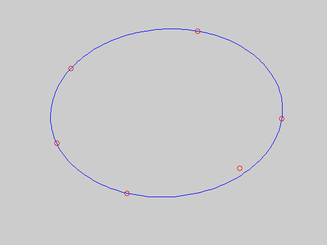

Minimum volume ellipsoid covering a finite set
x = [ 0.55 0.0;
0.25 0.35
-0.2 0.2
-0.25 -0.1
-0.0 -0.3
0.4 -0.2 ]';
[n,m] = size(x);
cvx_begin
variable A(n,n) symmetric
variable b(n)
maximize( det_rootn( A ) )
subject to
norms( A * x + b * ones( 1, m ), 2 ) <= 1;
cvx_end
clf
noangles = 200;
angles = linspace( 0, 2 * pi, noangles );
ellipse = A \ [ cos(angles) - b(1) ; sin(angles) - b(2) ];
plot( x(1,:), x(2,:), 'ro', ellipse(1,:), ellipse(2,:), 'b-' );
axis off
Calling SDPT3: 31 variables, 9 equality constraints
For improved efficiency, SDPT3 is solving the dual problem.
------------------------------------------------------------
num. of constraints = 9
dim. of sdp var = 6, num. of sdp blk = 2
dim. of socp var = 18, num. of socp blk = 6
*******************************************************************
SDPT3: Infeasible path-following algorithms
*******************************************************************
version predcorr gam expon scale_data
HKM 1 0.000 1 0
it pstep dstep pinfeas dinfeas gap mean(obj) cputime
-------------------------------------------------------------------
0|0.000|0.000|9.1e+00|2.6e+00|1.7e+02| 1.039230e+01| 0:0:00| chol 1 1
1|0.953|1.000|4.2e-01|1.0e-01|1.6e+01| 6.010769e+00| 0:0:00| chol 1 1
2|0.834|1.000|7.0e-02|1.0e-02|2.9e+00| 2.451402e+00| 0:0:00| chol 1 1
3|1.000|0.808|5.2e-07|1.3e-02|7.5e-01| 2.835179e+00| 0:0:00| chol 1 1
4|0.973|0.859|4.3e-08|1.9e-03|5.1e-02| 2.683335e+00| 0:0:00| chol 1 1
5|0.908|0.964|5.4e-09|7.9e-05|3.9e-03| 2.684156e+00| 0:0:00| chol 1 1
6|0.951|0.924|6.3e-09|6.9e-06|5.1e-04| 2.683950e+00| 0:0:00| chol 1 1
7|0.943|1.000|7.9e-09|1.3e-09|7.0e-05| 2.683990e+00| 0:0:00| chol 1 1
8|0.960|0.975|5.5e-10|1.6e-09|2.5e-06| 2.683986e+00| 0:0:00| chol 1 1
9|1.000|1.000|3.1e-12|1.1e-10|2.1e-07| 2.683985e+00| 0:0:00| chol 1 1
10|0.993|1.000|2.1e-14|1.0e-12|3.7e-09| 2.683985e+00| 0:0:00|
stop: max(relative gap, infeasibilities) < 1.49e-08
-------------------------------------------------------------------
number of iterations = 10
primal objective value = 2.68398540e+00
dual objective value = 2.68398540e+00
gap := trace(XZ) = 3.66e-09
relative gap = 5.75e-10
actual relative gap = 5.74e-10
rel. primal infeas = 2.13e-14
rel. dual infeas = 1.02e-12
norm(X), norm(y), norm(Z) = 2.6e+00, 6.1e+00, 1.0e+01
norm(A), norm(b), norm(C) = 6.5e+00, 2.0e+00, 3.4e+00
Total CPU time (secs) = 0.3
CPU time per iteration = 0.0
termination code = 0
DIMACS: 2.1e-14 0.0e+00 1.8e-12 0.0e+00 5.7e-10 5.7e-10
-------------------------------------------------------------------
------------------------------------------------------------
Status: Solved
Optimal value (cvx_optval): +2.68399
